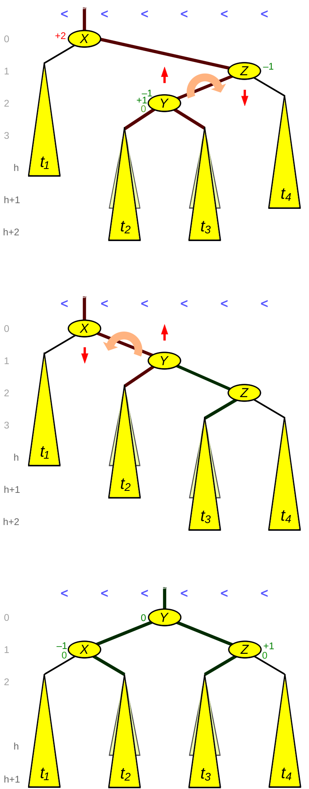

AVL Tree
Ziele
- Ich kennen den Unterschied zwischen einem unbalanced und balanced Tree
- Ich weiss, was ein AVLTree ist und verstehen seinen Balancing-Algorithmus
- Ich kann einen AVLTree implementieren
Übersicht
- Self-balancing Binary-Search-Tree erfunden von Adelson-Velsky & Landis 1962 (russische Mathematiker) – älteste Datenstruktur für balancierte Bäume
- Ähnlich wie Binary Search Trees
- Gleiche strukturelle Regeln
- Suche und Iteration/Traversierung ist identisch
- Einfügen und Löschen unterscheidet sich «nur» dadurch, dass zusätzlich ein Balance-Algorithmus angewendet wird (wenn nötig)
- Neue Konzepte
- Self-Balancing
- Höhe
- Balance Faktor
- Rechts/Links lastig
Balanced
Balanced Binary Search Tree
- Der Baum bleibt balanciert, wenn Nodes eingefügt und gelöscht werden
- O(log n) für Suche
- Für jeden Knoten gilt: Höhe des Left Childs weicht von der des Right Childs höchstens ±1 ab
- Beispiel
- Einfügen der Werte 1, 2, 3, 4
flowchart TD
2 --> 1
2 --> 3
3 --> 4Balanced Einfügen und Löschen
- Einfügen ist identisch wie beim Binary Search Tree
- Kleinerer Wert links
- Grösserer oder gleicher Wert rechts
- Löschen ist identisch wie beim Binary Search Tree
- Der zu löschende Node wird gesucht
- Child-Nodes werden bezogen auf die drei Regeln verschoben
- Nach dem Einfügen und dem Löschen eines Nodes wird für jeden Parent-Node des gesamten Trees der Balance-Algorithmus ausgeführt
Implementierung
- Klasse AVLTree entspricht fast der Klasse BinaryTree
- Ausnahme: Beim Einfügen und Löschen wird der Balance-Algorithmus ausgeführt
- Klasse Node beinhaltet Funktionalität für Self-Balancing
Balacing Algorithmus
- Für Balacing wird «Node-Rotation» verwendet
- Rotation wird beim Einfügen und Löschen ausgeführt
- für den betreffenden Node und seine Parents
- Rotation ändert die physikalische Struktur des Trees damit diese wieder den Anforderungen eines Binary Search Trees entsprechen
- Rotation Algorithmen
- Right Rotation
- Left Rotation
- Right-Left Rotation
- Left-Right Rotation
Welche Rotation?
- Tree rechts lastig
- Wenn Right Child links lastig
- Right-Left Rotation
- Sonst
- Left Rotation
- Wenn Right Child links lastig
- Tree links lastig
- Wenn Left Child rechts lastig
- Left-Right Rotation
- Sonst
- Right Rotation
- Wenn Left Child rechts lastig
internal void Balance() {
if (State == TreeState.RightHeavy) {
if (Right != null && Right.BalanceFactor < 0) {
RightLeftRotation();
} else {
LeftRotation();
}
} else if (State == TreeState.LeftHeavy) {
if (Left != null && Left.BalanceFactor > 0) {
LeftRightRotation();
} else {
RightRotation();
}
}
}
Right Rotation
- Algorithmus dreht einen Node nach rechts
- Left Child wird neuer Root-Node
- Right Child des neuen Root-Nodes wird Left Child des alten Root-Nodes
- Alter Root-Node wird Right Child des neuen Root-Nodes
-
Beispiel – Rotation nachdem «1» eingefügt wurde
- Rechte Höhe von Node «4» ist 0
- Linke Höhe von Node «4» ist 2
- «2» wird neuer Root-Node
- «4» wird Right Child von «2»
- «3» wird Left Child von «4»
-
Baum ist links-lastig --> Right Rotation
-
4 wird Right Child von 2
-
3 wird Left Child von 4
-
4 wird Right Child von 2
Left Rotation
- Algorithmus dreht einen Node nach links
- Right Child wird neuer Root-Node
- Left Child des neuen Root-Nodes wird Right Child des alten Root-Nodes
- Alter Root-Node wird Left Child des neuen Root-Nodes
-
Beispiel – Rotation nachdem «4» eingefügt wurde
- Linke Höhe von Node «1» ist 0
- Linke Höhe von Node «1» ist 2
- «3» wird neuer Root-Node
- «2» wird Right Child von «1»
- «1» wird Left Child von «3»
-
Baum ist rechts-lastig --> left Rotation
-
1 wird Linke Höhe von Node 1 ist 0
-
3 Wird neuer Root-Node
-
2 wird Right Child von 1
-
1 wird Left Child von 3
Left-Right Rotation
- Right Rotation kann wiederum in einen unbalanced Tree resultieren
- Lösung
- Left Rotation des Left Child
- Right Rotation des aktualisierten Trees
-
Beispiel
- Left Rotation von «1»
- Right Rotation von «3»
-
Right Rotation dreht diesen Baum wieder ins unbalanced!
-
Nach Right Rotation
-
Lösung --> Left Rotation und Right Rotation = Left-Right Rotation
-
Beispiel
- Left Rotation 1
- Right Rotation 3
-
Select 1
- Left Rotation von 1
- Right Rotation von 3
Right-Left Rotation
- Left Rotation kann wiederum in einen unbalanced Tree resultieren
- Lösung
- Right Rotation des Right Child
- Left Rotation des aktualisierten Trees
-
Beispiel
- Right Rotation von «3»
- Left Rotation von «1»
-
Left Rotation kann wiederum in einen unbalanced Tree resultieren
-
Select 3
- Right Rotation von 3
- Left Rotation von 1
Vom Binary-Tree zum AVL-Tree
Info
AVL-Tree entspricht einem Binary Tree, welcher nach Add() sowie Remove() neu balanciert
AVLTreeView
- Demo
- Verwendet «Microsoft Automatic Graph Layout» - diese Lib ist in der Lage, Graphen zu zeichnen
https://github.com/Microsoft/automatic-graph-layout
https://en.wikipedia.org/wiki/Microsoft_Automatic_Graph_Layout
Selbststudium
- AVLTree
- https://en.wikipedia.org/wiki/AVL_tree
- https://www.cs.usfca.edu/~galles/visualization/AVLtree.html
- Tree Rotation
- https://en.wikipedia.org/wiki/Tree_rotation
- Binary Tree
- https://en.wikipedia.org/wiki/Binary_tree
Implementierung
using System;
public class AVLTreeNode
{
public int Key;
public int Height;
public AVLTreeNode Left;
public AVLTreeNode Right;
public AVLTreeNode(int key)
{
Key = key;
Height = 1; // Höhe des neuen Knotens ist 1
}
}
public class AVLTree
{
private AVLTreeNode root;
public void Insert(int key)
{
root = Insert(root, key);
}
private AVLTreeNode Insert(AVLTreeNode node, int key)
{
// Normale BST-Einfügeoperation
if (node == null)
return new AVLTreeNode(key);
if (key < node.Key)
node.Left = Insert(node.Left, key);
else if (key > node.Key)
node.Right = Insert(node.Right, key);
else
return node; // Duplikate werden nicht eingefügt
// Aktualisiere die Höhe des Vorfahrenknotens
node.Height = 1 + Math.Max(GetHeight(node.Left), GetHeight(node.Right));
// Berechne den Balancefaktor
int balance = GetBalance(node);
// Wenn der Knoten unbalanciert ist, gibt es 4 Fälle
// Linker Linker Fall
if (balance > 1 && key < node.Left.Key)
return RightRotate(node);
// Rechter Rechter Fall
if (balance < -1 && key > node.Right.Key)
return LeftRotate(node);
// Linker Rechter Fall
if (balance > 1 && key > node.Left.Key)
{
node.Left = LeftRotate(node.Left);
return RightRotate(node);
}
// Rechter Linker Fall
if (balance < -1 && key < node.Right.Key)
{
node.Right = RightRotate(node.Right);
return LeftRotate(node);
}
// Rückgabe des (unveränderten) Knotenszeigers
return node;
}
private int GetHeight(AVLTreeNode node)
{
return node == null ? 0 : node.Height;
}
private int GetBalance(AVLTreeNode node)
{
return node == null ? 0 : GetHeight(node.Left) - GetHeight(node.Right);
}
private AVLTreeNode RightRotate(AVLTreeNode y)
{
AVLTreeNode x = y.Left;
AVLTreeNode T2 = x.Right;
// Durchführung der Rotation
x.Right = y;
y.Left = T2;
// Aktualisiere die Höhen
y.Height = Math.Max(GetHeight(y.Left), GetHeight(y.Right)) + 1;
x.Height = Math.Max(GetHeight(x.Left), GetHeight(x.Right)) + 1;
// Rückgabe des neuen Wurzelknotens
return x;
}
private AVLTreeNode LeftRotate(AVLTreeNode x)
{
AVLTreeNode y = x.Right;
AVLTreeNode T2 = y.Left;
// Durchführung der Rotation
y.Left = x;
x.Right = T2;
// Aktualisiere die Höhen
x.Height = Math.Max(GetHeight(x.Left), GetHeight(x.Right)) + 1;
y.Height = Math.Max(GetHeight(y.Left), GetHeight(y.Right)) + 1;
// Rückgabe des neuen Wurzelknotens
return y;
}
public void PreOrder()
{
PreOrder(root);
}
private void PreOrder(AVLTreeNode node)
{
if (node != null)
{
Console.Write(node.Key + " ");
PreOrder(node.Left);
PreOrder(node.Right);
}
}
}
class Program
{
static void Main(string[] args)
{
AVLTree tree = new AVLTree();
// Beispielwerte einfügen
tree.Insert(10);
tree.Insert(20);
tree.Insert(30);
tree.Insert(40);
tree.Insert(50);
tree.Insert(25);
// Vorbestellung Traversierung
Console.WriteLine("Vorbestellung Traversierung des AVL-Baums:");
tree.PreOrder();
}
}
Beispiel Rotationen
Einfache Rotation
- Right
- Left
- Ergebnis der Right Rotation
- 23 gehört zu 50!
Doppelte Rotation
- Right Left
- Left Right
- Right Right
- Left Left
1. Right Rotation zwischen Y und Z
2. Left Rotation zwischen X und Y
Doppelrotation --> RechtsLinks(X, Z) = Rechts(Z) + Links(X)

Balance Faktor (BF)
-
Berechnung von unten nach Oben.
-
Formel
- Höhe (rechterteil Baum) - Höhe (linker Teilbaum)
Beispiel
- 2 = BF 0 --> da keine Kinder
- 15 = BF 0 --> da keine Kinder
- 42 = BF 0 --> da keine Kinder
- 24 = BF 0 --> 1 - 1 = 0
- 3 = BF -1 --> 0 - 1 = -1
- 7 = BF 0 --> 1 - 1 = 0
Einfügen von 1
--> BF neu berechnen
- 1 = BF 0 --> 1-1 = 0
- 2 = BF 0 --> 1-0 = -1
- 15 = BF 0 --> da keine Kinder
- 42 = BF 0 --> da keine Kinder
- 24 = BF 0 --> 1 - 1 = 0
- 3 = BF -2 --> 0 - 2 = -2 --> verletzt die AVL Tree regel --> +/-1
- 7 = BF -2 --> 2 - 3 = -1
Rechts Rotation
--> Rechtsrotation des verletzenden Knoten --> Knoten 3
Links Rotation
- Löschen von 15
- Hinzfügen von 73
- BF 24 = 2 --> 2 - 0 = 2 --> verletzung der Regel +/-1
Doppelrotation
- Löschen von 1 und 3
- Hinzufügen von 15
- --> unbalanced
- BF Knoten 7 = 3 - 1 = +2 --> verletzung der Regel
- BF Knoten 42 = 1 - 2 = -1
Rechts Links Rotation
-
Unter Knoten 42 ansehen und Rechts Rotation
-
Links Rotation
-
!! Geht nicht da nur zwei Kinder möglich sind.
- Knoten 15 wird zu Right Child von 7
- Fertig
Selbststudium / Hilfe
Rotations Hilfe
Rotation BF Oberer Knoten BF Unterer Knoten Rechts-Rotation -2 -1 Links-Rotation +2 +1 Rechts-Links-Rotation +2 -1 Links-Rechts-Rotation -2 +1
| Rotation | BF Oberer Knoten | BF Unterer Knoten |
|---|---|---|
| Rechts-Rotation | -2 | -1 |
| Links-Rotation | +2 | +1 |
| Rechts-Links-Rotation | +2 | -1 |
| Links-Rechts-Rotation | -2 | +1 |